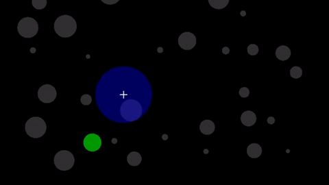

Welcome to the evaluation study for the Bubble Cursor - an enhanced pointing/selection technique that makes it easier to select items on-screen. Unlike traditional clicking, the Bubble Cursor dynamically grows to 'snap' to the closest selectable item, allowing for faster and more accurate target selection!
During the study, you will interact with randomly placed items on the screen. Your goal is to select green targets as quickly and accurately as possible, while avoiding distractor items (gray/non-highlighted). You will complete tasks using both the Bubble Cursor and the Traditional Mouse Cursor. Your performance with each method will be compared to evaluate efficiency and accuracy based on Fitts’s Law.
Note that the Bubble Cursor will automatically expand and highlight the closest target within its bubble range. Simply left click to confirm the selection. Your speed, precision, and error rate will be recorded for each trial. An example of how this selection tool behaves is given below in order to get you more familiar with this technique.
